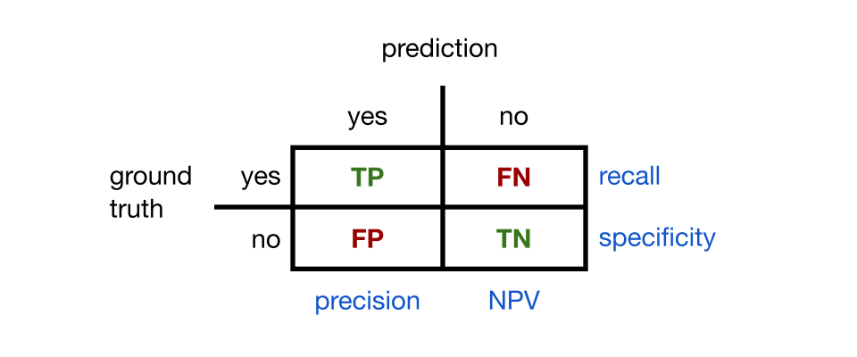
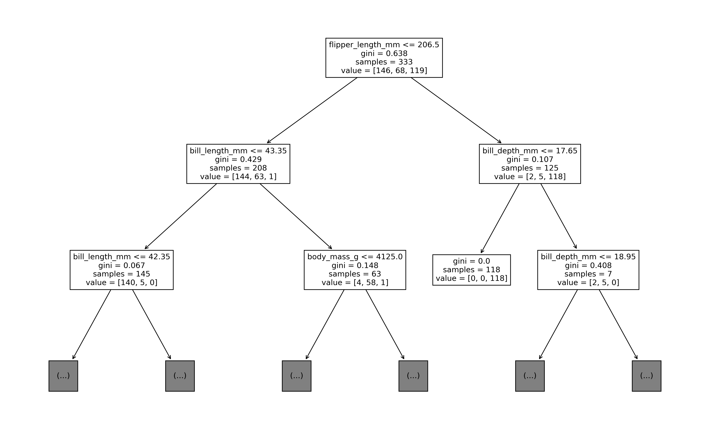

Machine learning is the use of data to tune algorithms for making decisions or predictions. Unlike deduction based on reasoning from principles governing the application, machine learning is a “black box” that just adapts via training.
We divide machine learning into three major forms:
Supervised learning
The training data only examples that include the answer (or label) we expect to get. The goals are to find important effects and/or to predict labels for previously unseen examples.
Unsupervised learning
The data is unlabeled, and the goal is to discover structure and relationships inherent to the data set.
Reinforcement learning
The data is unlabeled, but there are known rules and goals that can be encouraged through penalties and rewards.
We start with supervised learning, which can be subdivided into two major areas:
Classification, in which the algorithm is expected to choose from among a finite set of options.
Regression, in which the algorithm should predict the value of a quantitative variable.
Most algorithms for one of these problems have counterparts in the other.
3.1 Classification basics
A single training example or sample is characterized by a feature vector\(\bfx\) of \(d\) real numbers and a label\(y\) drawn from a finite set \(L\). If \(L\) has only two members (say, “true” and “false”), we have a binary classification problem; otherwise, we have a multiclass problem.
When we have \(n\) training samples, it’s natural to collect them into columns of a feature matrix\(\bfX\) with \(n\) rows and \(d\) columns. Using subscripts to represent the indexes of the matrix, we can write
A 2D array or matrix has elements that are addressed by two subscripts. These are always given in order row, column.
In math, we usually start the row and column indexes at 1, but Python starts them at 0.
Each row of the feature matrix is a single feature vector, while each column is the value for a single feature over the entire training set.
Example 3.1 Suppose we want to train an algorithm to predict whether a basketball shot will score. For one shot, we might collect three coordinates to represent the launch point, three to represent the launch velocity, and three to represent the initial angular rotation (axis and magnitude). Thus each shot will require a feature vector of length 9. A collection of 200 sample shots would be encoded as a \(200\times 9\) feature matrix.
We can also collect the associated training labels into the label vector
In linear algebra, the default shape for a vector is usually as a single column. In Python, a vector doesn’t exactly have a row or column orientation, though when it matters, a row shape is usually preferred.
Each component \(y_i\) of the label vector is drawn from the label set \(L\).
3.1.1 Encoding qualitative data
We have defined the features as numerical values. What should we do with qualitative data? We could arbitrarily assign numbers to possible values, such as “0=red”, “1=blue”, “2=yellow,” and so on. But this is not ideal: most of the time, we would not want to say that yellow is twice as far from red as it is from blue!
A better strategy is to use the one-hot or dummy encoding. If a particular feature can take on \(k\) unique values, then we introduce \(k\) new features indicating which value is present. (We can use \(k-1\) dummy features if we interpret all-zeros to mean the \(k\)th possibility.)
3.1.2 Walkthrough
The scikit-learn package sklearn is a collection of well-known machine learning algorithms and tools. Scikit-learn offers a uniform framework across all classifier types:
Define features and labels as numpy arrays or pandas frames.
Create a learner object, specifying any values that specialize the behavior.
Train the learner on the data by calling the fit method.
Apply the learner to a feature matrix/frame using the predict method.
The package also includes a few classic example datasets. We load one derived from automatic recognition of handwritten digits:
from sklearn import datasets ds = datasets.load_digits() # loads a well-known datasetX, digits = ds["data"], ds["target"] # assign feature matrix and label vectorprint("The feature matrix has shape", X.shape)print("The label vector has shape", digits.shape)n, d = X.shapeprint("there are", d, "features and", n, "samples")
The feature matrix has shape (1797, 64)
The label vector has shape (1797,)
there are 64 features and 1797 samples
The entries of digits are integer values 0 through 9, indicating the true value of the corresponding handwritten digit. Let’s consider the binary problem, “is this digit a 6?” That implies the following Boolean label vector:
y = (digits ==6)print("Number of sixes in dataset:", sum(y))
Number of sixes in dataset: 181
It so happens that the 64 features in the dataset are the pixel grayscale values from an \(8\times 8\) bitmap of a handwritten digit. We can visualize the raw data. Here are some of the 6s, for example:
Code
import matplotlib.pyplot as pltimport numpy as npimport seaborn as snsdef plot_digits(X): fig, axes = plt.subplots(4,4)for i inrange(4):for j inrange(4): row = j +4*i A = np.reshape(np.array(X[row,:]),(8,8)) sns.heatmap(A,ax=axes[i,j],square=True,cmap="gray",cbar=False) axes[i,j].axis(False)returnNoneplot_digits(X[y])
The process of training a classifier is called fitting. We first have to import a particular classifier type, then create an instance of that type. Here, we choose one that we will study in a future section:
from sklearn.neighbors import KNeighborsClassifierknn = KNeighborsClassifier(n_neighbors=20) # specification of the model
Now we can fit the learner to the training data:
knn.fit(X, y) # training of the model
KNeighborsClassifier(n_neighbors=20)
In a Jupyter environment, please rerun this cell to show the HTML representation or trust the notebook. On GitHub, the HTML representation is unable to render, please try loading this page with nbviewer.org.
KNeighborsClassifier(n_neighbors=20)
At this point, the classifier object knn has figured out what it needs from the training data. It has methods we can now call to make predictions and evaluate the quality of the results.
Each new prediction is for a query vector with 64 features. In practice, we can use a list in place of a vector for the query.
query = [20]*d # list with d copies of 20
The predict method of the classifier allows specifying multiple query vectors as rows of an array. In fact, it expects a 2D array in all cases, even if there is just one row.
Xq = [ query ] # 2D array with a single row
The result of the prediction will be a vector of labels, one per row of the query.
# Get vector of predictions:knn.predict(Xq)
array([False])
Important
The predict method requires a vector or list of query vectors or lists and it outputs a vector of classes. This is true even if there is just a single query.
At the moment, we don’t have any realistic query data at hand other than the training data. But we can investigate the question of how well the classifier does on that data, simply by using the feature matrix as the query:
# Get vector of predictions for the training set:yhat = knn.predict(X)
Now we simply count up the number of correctly predicted labels and divide by the total number of samples to get the accuracy of the classifier.
acc =sum(yhat == y) / n # fraction of correct predictionsprint(f"accuracy is {acc:.1%}")
accuracy is 99.9%
Not surprisingly, sklearn has functions for doing this measurement in fewer steps. The metrics module has functions that can compare true labels with predictions. In addition, each classifier object has a score method that allows you to skip finding the predictions vector yourself.
from sklearn.metrics import accuracy_score# Compare original labels to predictions:acc = accuracy_score(y, yhat) print(f"accuracy score is {acc:.1%}")# Same result, if we don't want to keep the predicted values around:acc = knn.score(X, y) print(f"knn score is {acc:.1%}")
accuracy score is 99.9%
knn score is 99.9%
Does this mean that the classifier is a good one? The raw number looks great, but that question is more subtle than you would expect.
3.2 Classifier performance
Let’s return to the (previously cleaned) loan applications dataset.
import pandas as pdloans = pd.read_csv("_datasets/loan_clean.csv")loans.head()
loan_amnt
int_rate
installment
annual_inc
dti
delinq_2yrs
delinq_amnt
percent_funded
0
5000
10.65
162.87
24000.0
27.65
0
0
100.0
1
2500
15.27
59.83
30000.0
1.00
0
0
100.0
2
2400
15.96
84.33
12252.0
8.72
0
0
100.0
3
10000
13.49
339.31
49200.0
20.00
0
0
100.0
4
3000
12.69
67.79
80000.0
17.94
0
0
100.0
We create a binary classification problem by labelling whether each loan was at least 95% funded. The other columns will form the features for the predictions.
X = loans.drop("percent_funded", axis=1)y = loans["percent_funded"] >95
3.2.1 Train–test paradigm
It seems desirable for a classifier to work well on the samples it was trained on. But we probably want to do more than that.
Definition 3.1 The performance of a predictor on previously unseen data is known as the generalization of the predictor.
In order to gauge generalization, we hold back some of the labeled data from training and use it only to test the performance. An sklearn helper function called train_test_split allows us to split off 20% of the data to use for testing. It’s usually recommended to shuffle the order of the samples before the split, and in order to make the results reproducible, we give a specific random seed to the RNG used for the shuffle.
There are 31773 training samples.
There are 7944 testing samples.
We can check that the test and train labels have similar characteristics:
import pandas as pdprint("labels in the training set:")print( pd.Series(y_train).describe() )print("\nlabels in the testing set:")print( pd.Series(y_test).describe() )
labels in the training set:
count 31773
unique 2
top True
freq 30351
Name: percent_funded, dtype: object
labels in the testing set:
count 7944
unique 2
top True
freq 7575
Name: percent_funded, dtype: object
Now we train on the training data…
knn = KNeighborsClassifier(n_neighbors=9)knn.fit(X_train, y_train) # fit only to train set
KNeighborsClassifier(n_neighbors=9)
In a Jupyter environment, please rerun this cell to show the HTML representation or trust the notebook. On GitHub, the HTML representation is unable to render, please try loading this page with nbviewer.org.
KNeighborsClassifier(n_neighbors=9)
…and test on the rest.
acc = knn.score(X_test, y_test) # score only on test setprint(f"test accuracy is {acc:.1%}")
test accuracy is 95.6%
This seems like a high accuracy, perhaps. But consider that the vast majority of loans were funded:
funded =sum(y)print(f"{funded/len(y):.1%} were funded")
95.5% were funded
Therefore, an algorithm that simply “predicts” funding every single loan could do as well as the trained classifier!
from sklearn.metrics import accuracy_scoregenerous = [True]*len(y_test)acc = accuracy_score(y_test, generous)print(f"fund-them-all accuracy is {acc:.1%}")
fund-them-all accuracy is 95.4%
In this context, our trained classifier is not impressive at all. We need a metric other than accuracy.
3.2.2 Binary classifiers
A binary classifier is one that produces just two unique labels, which we call “yes” and “no” here. To fully understand the performance of a binary classifier, we have to account for four cases:
True positives (TP): Predicts “yes”, actually is “yes”
False positives (FP): Predicts “yes”, actually is “no”
True negatives (TN): Predicts “no”, actually is “no”
False negatives (FN): Predicts “no”, actually is “yes”
We often display these in a 2×2 table according to the states of the prediction and ground truth (i.e., the given label in the dataset). The table can be filled with counts or percentages of tested instances to create a confusion matrix, as illustrated in Figure 3.1.

Figure 3.1: A confusion matrix. Correct predictions are on the diagonal.
Definition 3.2 The following primary metrics are defined for a binary classifier:
accuracy
\(\dfrac{\TP + \TN}{\TP + \FP + \TN + \FN}\)
recall
\(\dfrac{\TP}{\TP + \FN}\)
specificity
\(\dfrac{\TN}{\TN + \FP}\)
precision
\(\dfrac{\TP}{\TP + \FP}\)
negative predictive value (NPV)
\(\dfrac{\TN}{\TN + \FN}\)
Note
Recall is also known as sensitivity or the true positive rate. Specificity is the true negative rate.
All of the primary metrics vary between 0 (worst) and 1 (best). Accuracy is self-explanatory; the other metrics answer the following questions:
recall How often are actual “yes” cases predicted correctly?
specificity How often are actual “no” cases predicted correctly?
precision How often are the “yes” predictions correct?
NPV How often are the “no” predictions correct?
Example 3.2 Here is a confusion matrix for a hypothetical test for COVID-19 antigens applied to 100 samples:
Predicted \(+\)
Predicted \(-\)
Actually \(+\)
22
4
Actually \(-\)
12
62
From this we see that the accuracy is \(84/100\), or 84%. Out of 26 samples that had the antigen, the test identified 22, for a recall of \(22/26=84.6\)%. Out of 74 samples that did not have the antigen, 62 were predicted correctly, for a specificity of \(62/74=83.8\)%. Finally, the precision is \(22/34=64.7\)% and the NPV is \(62/66=93.9\)%.
The metrics to pay attention to depend on the context and application. For a pregnancy test, for example, the health consequences of a false negative might be substantial, so the manufacturer might aim mainly for a high recall rate. But a risk-averse loan officer would be most concerned about making loans to those who end up defaulting, i.e. a low false positive rate, and seek a high precision.
There are ways of combining the primary metrics in order to account for two at once.
Definition 3.3 The F₁ score is the harmonic mean of the precision and the recall, i.e., \[
F_1 = \left[ \frac{1}{2} \left(\frac{1}{\text{precision}} + \frac{1}{\text{recall}} \right) \right]^{-1} = \frac{2\TP}{2\TP+\FN+\FP}.
\]
The balanced accuracy is the arithmetic mean of recall and specificity.
Like the primary metrics, \(F_1\) and balanced accuracy range between 0 (worst) and 1 (best). The harmonic mean is small if either of its terms is small, so a high \(F_1\) means both precision and recall are good.
Example 3.3 Continuing with the loan classifier trained earlier in this section, we can find the confusion matrix:
It’s advisable to always call confusion_matrix with the labels argument, even though it is optional, in order to control the ordering within the matrix. In particular, False < True, so the default for Boolean labels is to count the upper left corner of the matrix as “true negatives,” assuming that False represents a negative result.
In order order to help keep track of what the entries mean, we can also make a picture of the confusion matrix:
from sklearn.metrics import ConfusionMatrixDisplaylbl = ["fund", "reject"]ConfusionMatrixDisplay(C, display_labels=lbl).plot();
Hence, there are 7570 true positives. The accuracy is
As noted above, few who ought to get a loan will go away disappointed, a loan officer might get nervous about the low specificity score that indicates bad loans.
In sklearn.metrics there are functions to compute recall and precision without reference to the confusion matrix. You must put the ground-truth labels before the predicted labels, and you should also specify which label value corresponds to a “positive” result. Swapping the “positive” role effectively swaps recall with specificity and precision with NPV.
from sklearn.metrics import precision_score, recall_scorefor pos in [True, False]:print("With", pos, "as positive:") s = recall_score(y_test, yhat, pos_label=pos)print(f" recall is {s:.3f}") s = precision_score(y_test, yhat, pos_label=pos) print(f" precision is {s:.3f}")print()
With True as positive:
recall is 0.999
precision is 0.957
With False as positive:
recall is 0.070
precision is 0.839
There are also functions for the composite scores defined in Definition 3.3:
The loan classifier has excellent recall, respectable precision, and terrible specificity, resulting in a good F₁ score and a low balanced accuracy score.
Example 3.4 If \(k\) of the \(n\) testing samples were funded loans, then the fund-them-all loan classifier has
If the fraction of funded samples in the test set is \(k/n=a\), then the accuracy of this classifier is \(a\). Its F₁ score is \(2a/(1+a)\), which is larger than \(a\) unless \(a=1\). That’s because the true positives greatly outweigh the other confusion matrix values.
independently of \(a\). This quantity is sensitive to the low specificity.
3.2.3 Multiclass classifiers
When there are more than two unique possible labels, these metrics can be applied using the one-vs-rest paradigm. For \(K\) unique labels, this paradigm poses \(K\) binary questions: “Is it in class 1, or not?”, “Is it in class 2, or not?”, etc. The confusion matrix becomes \(K\times K\).
Example 3.5 We load a dataset on the characteristics of cars and use quantitative factors to predict the region of origin:
import seaborn as snscars = sns.load_dataset("mpg").dropna()cars.head()
mpg
cylinders
displacement
horsepower
weight
acceleration
model_year
origin
name
0
18.0
8
307.0
130.0
3504
12.0
70
usa
chevrolet chevelle malibu
1
15.0
8
350.0
165.0
3693
11.5
70
usa
buick skylark 320
2
18.0
8
318.0
150.0
3436
11.0
70
usa
plymouth satellite
3
16.0
8
304.0
150.0
3433
12.0
70
usa
amc rebel sst
4
17.0
8
302.0
140.0
3449
10.5
70
usa
ford torino
Now we extract the quantitative features and labels:
From the confusion matrix above we can see that, for example, out of 54 predictions of “usa” on the test set, there are 8 total false positives, in the sense that the actual labels were otherwise.
We also get \(K\) versions of the metrics like accuracy, recall, F₁ score, and so on. We can get all the individual precision scores, say, automatically:
To get a composite precision score, we have to specify an averaging method. The "macro" option simply takes the mean of the vector above.
mac = precision_score(y_test, yhat, average="macro")print(mac)
0.6883623819898329
There are other ways to average performance scores over the classes, depending on whether poorly represented classes should be weighted more weakly than others.
3.3 Decision trees
A decision tree is much like playing Twenty Questions. A question is asked, and the answer reduces the possible results, leading to a new question. CART (Classification And Regression Tree), which we present here, is a popular method for systematizing the idea.
Given feature vectors \(\bfx_1,\ldots,\bfx_n\) with labels \(y_1,\ldots,y_n\), the immediate goal is to partition the samples into two subsets, each of which has as uniform as set of labels as possible. The process is then repeated recursively: the subsets are bisected to make four subsets, and so on. These splits form a binary tree. When a prediction is required, we apply the same criteria as the splits in our tree, and when we reach a leaf of the tree (i.e., no further subdivisions), we take a vote of all the samples in the leaf subset to determine the label.
There are two details that need to be specified: what kind of subset splits to allow, and how to determine the uniformity of labels within each subset. We start with the latter.
3.3.1 Gini impurity
Definition 3.4 Let \(k\) be an integer. The indicator function\(\mathbb{1}_k\) is the function on integers defined as \[
\mathbb{1}_k(t) = \begin{cases}
1, & \text{if } t=k, \\
0, & \text{otherwise.}
\end{cases}
\]
Let \(S\) be any subset of samples, given as a list of indices into the original set. Suppose there are \(K\) unique labels, which we denote \(1,2,\ldots,K\). Define the values
where \(|S|\) is the number of elements in \(S\). In words, \(p_k\) is the proportion of samples in \(S\) that have label \(k\). Note that the sum over all the \(p_k\) equals 1.
Definition 3.5 The Gini impurity of sample set \(S\) is defined as \[
H(S) = \sum_{k=1}^K p_k(1-p_k),
\] where \(p_k\) is defined in Equation 3.1.
If one of the \(p_k\) is 1, then the others are all zero and \(H(S)=0\). This is considered optimal—it indicates that all the labels in the set \(S\) are identical.
At the other extreme, if \(p_k=1/K\) for all \(k\), then \[
H(S) = \sum_{k=1}^K \frac{1}{K} \left(1 - \frac{1}{K} \right) = K\cdot \frac{1}{K}\cdot\frac{K-1}{K} = \frac{K-1}{K} < 1.
\] In general, \(H\) is always nonnegative and less than 1, and it only approaches 1 in the limit of a large number of equally distributed classes.
Example 3.6 Suppose a set \(S\) has \(n\) members with label A, 1 member with label B, and 1 member with label C. What is the Gini impurity of \(S\)?
Solution. We have \(p_A=n/(n+2)\), \(p_B=p_C=1/(n+2)\). Hence
This value is 1/2 for \(n=0\) and approaches zero as \(n\to\infty\).
3.3.2 Partitioning
Suppose we start with a sample set \(S\) that we partition into disjoint (i.e., nonoverlapping) subsets \(S_L\) and \(S_R\). We want to assign a total impurity to the partitioning so that we can compare different scenarios. One pitfall we should avoid is to put just one sample into \(S_L\) and all the rest into \(S_R\), which would make \(H(S_L)=0\) automatically and give an advantage. So we will choose a formula that rewards more evenly divided subsets.
Definition 3.6 The total impurity of the partition \((S_L,S_R)\) is \[
Q(S_L,S_R) = \lvert S_L\rvert\, H(S_L) + \lvert S_R \rvert \, H(S_R).
\]
If \(S_L\) and \(S_R\) are both pure subsets, then \(Q(S_L,S_R)=0\). Otherwise, \(Q\) tends to be larger in response to less purity and greater size in the subsets.
Our goal is to choose a partition that minimizes \(Q\). However, we constrain ourselves to allow only certain kinds of partitions. If feature space is \(d\)-dimensional, we select a dimension \(1 \le j \le d\) and a real threshold value \(\theta\). Then each feature vector \(\bfx\) is placed in \(S_L\) if \(x_j \le \theta\) and in \(S_R\) if \(x_j > \theta\). Geometrically, we are dividing feature space by an axis-aligned line if \(d=2\) or an axis-aligned plane if \(d=3\). This splitting criterion can be evaluated extremely quickly, and we can find the best possible such partitioning in the sense of minimizing \(Q(S_L,S_R)\) in a reasonable amount of time.
Example 3.7 Suppose we have \(d=1\) feature and are given the four samples \((X_i,y_i) = \{ (0,A), (1,B), (2,A), (3,B) \}\). What is the optimal partition?
Solution. We can partition into two pieces based on a threshold value \(\theta\): \(\{x \le \theta\}\) and \(\{x > \theta\}\). But there are really only 5 different cases.
\(\theta\)
Left
Right
\(Q\)
\(< 0\)
\(\varnothing\), \(H=0\)
\([A, B, A, B]\), \(H=\tfrac{1}{2}\cdot \tfrac{1}{2} + \tfrac{1}{2}\cdot \tfrac{1}{2} =\tfrac{1}{2}\)
\(0\cdot 0 + 4\cdot \tfrac{1}{2} = 2\)
\([0,1)\)
\([A]\), \(H=0\)
\([B, A, B]\), \(H=\tfrac{2}{3}\cdot \tfrac{1}{3} + \tfrac{1}{3}\cdot \tfrac{2}{3} =\tfrac{4}{9}\)
\([A, B, A, B]\), \(H=\tfrac{1}{2}\cdot \tfrac{1}{2} + \tfrac{1}{2}\cdot \tfrac{1}{2} =\tfrac{1}{2}\)
\(\varnothing\), \(H=0\)
\(4\cdot \tfrac{1}{2} + 0\cdot 0 = 2\)
Both \(\{ (0,A) \}, \{ (1,B), (2,A), (3,B) \}\) and \(\{ (0,A), (1,B), (2,A) \}, \{ (3,B) \}\) are equally optimal partitionings, with \(Q=4/3\).
Finally, once we have found the optimal way to split \(S\) into \((S_L,S_R)\), we need to check whether it is an improvement—that is, whether \[
Q(S_L,S_R) + \alpha < Q(S,\varnothing) = |S| H(S),
\] where \(\alpha\) is an optional nonnegative number that requires a certain minimum amount of decrease. If the condition is satisfied, then \(S\) is not split and becomes a leaf of the decision tree. If so, then we add this split to the binary tree and recursively check both \(S_L\) and \(S_R\) for partitioning.
The above strategy is fast but can fail to get the best possible decision tree. That is, the optimal partition into 4 or 8 subsets might require you to look ahead in order to avoid a good-looking first partition that leads you astray. Because the optimization algorithm considers only one level at a time, we say it is a greedy approach.
3.3.3 Decision boundary
One way to think about a classifier is that it divides all of feature space into zones belonging to the different classes. The boundary between two zones is the set of points where the classifier is indifferent between the two classes; together, the boundary points form the decision boundary.
For a decision tree, the decision boundary is always perpendicular to the feature axes, as illustrated in this animation:
Initially, when the tree has a depth of 1, all of feature space is divided into two zones. At each new depth the tree is able to add more zones, and the decision boundary gradually becomes more complex.
3.3.4 Usage and interpretation
In naive form, the decision tree construction continues to find partitions until every leaf in the tree represents a pure subset. In practice, we usually set a limit on the depth of the tree, which is the maximum number of partitions it takes to start from the root and reach any leaf. This obviously puts an upper limit on the computational time, but it is also desirable for other reasons we will explore in the next chapter.
Example 3.8 We create a toy dataset with 20 random points in the plane, with two subsets of 10 that are shifted left/right a bit. (The details are not important.) Here is how the set looks:
The features are the two point coordinates, giving a 20-by-2 feature matrix X, and the labels are a vector y of length 20. We will create a data frame for aiding in visualization:
Now we create and fit a decision tree for these samples:
from sklearn.tree import DecisionTreeClassifier, plot_treetree = DecisionTreeClassifier(max_depth=3)tree.fit(X,y)
DecisionTreeClassifier(max_depth=3)
In a Jupyter environment, please rerun this cell to show the HTML representation or trust the notebook. On GitHub, the HTML representation is unable to render, please try loading this page with nbviewer.org.
DecisionTreeClassifier(max_depth=3)
At this point, the tree object has created and stored all the information derived from the dataset that defines the decision tree. Since this is a small tree, we can easily look under the hood:
Code
from matplotlib.pyplot import figurefigure(figsize=(18,11), dpi=160)plot_tree(tree, feature_names=["x₁", "x₂"]);

The root of the tree at the top shows that the best initial split was found at the vertical line \(x_1=0.644\). To the right of that line is a Gini value of zero: 8 samples, all with label 2. That is, any future prediction by this tree will immediately return label 2 if its value for \(x_1\) exceeds 0.644. Otherwise, it moves to the left child node and tests whether \(x_2\) is greater than \(0.96\). As you can see from the scatterplot above, that horizontal line has a single sample with label 2 above it. And so on.
Notice that the bottom right node has a nonzero final Gini impurity. This node could be partitioned, but the classifier was constrained to stop at a depth of 3. If a prediction ends up here, then the classifier returns label 1, which is the most likely outcome.
Because we can follow a decision tree’s logic step by step, we say it is highly interpretable. The transparency of the prediction algorithm is an attractive aspect of decision trees, although this advantage can weaken as the power of the tree is increased to handle difficult datasets.
Example 3.9 We return to the penguins and fit a decision tree to the quantitative features:
In a Jupyter environment, please rerun this cell to show the HTML representation or trust the notebook. On GitHub, the HTML representation is unable to render, please try loading this page with nbviewer.org.
DecisionTreeClassifier(max_depth=4)
We get some interesting information from looking at the top levels of a decision tree trained on the full dataset:
Code
from matplotlib.pyplot import figurefigure(figsize=(18,11), dpi=160)plot_tree(dt, max_depth=2, feature_names=features);
The most determinative feature for identifying the species is apparently the flipper length. If it exceeds 206.5 mm, then the penguin is rather likely to be a Gentoo.
We can measure the relative importance of each feature by comparing their total contributions to reducing the Gini index:
Flipper length alone accounts for about half of the resolving power of the tree, followed in importance by the bill length. The other measurements apparently have little discriminative value.
In order to assess the effectiveness of the tree, we use the train–test paradigm:
Decision trees can depend sensitively on the sample locations; a small change might completely rewrite large parts of the tree, in which case interpretability becomes less clear.
3.4 Nearest neighbors
The next learner type is conceptually simple: given a point in feature space to classify, survey the nearest known examples and choose the most frequently occurring class. This is called the \(k\) nearest neighbors (kNN or \(k\)-NN) algorithm, where \(k\) is the number of neighboring examples to survey.
3.4.1 Distances and norms
The existence of “closest” examples means that we need to define a notion of distance in feature spaces of any dimension. Let \(\real^d\) be the space of vectors with \(d\) real components, and let \(\bfzero\) be the vector of all zeros.
Definition 3.7 A distance metric is a function \(\dist\) on pairs of vectors that satisfies the following properties for all vectors \(\bfu\), \(\bfv\), and \(\bfz\):
\(\dist(\bfu,\bfv) \ge 0\),
\(\dist(\bfu,\bfv)=0\) if and only if \(\bfu=\bfv\),
\(\dist(\bfu,\bfv) = \dist(\bfv,\bfu)\), and
\(\dist(\bfu,\bfv) \le \dist(\bfu,\bfz) + \dist(\bfz,\bfv)\), known as the triangle inequality.
These are considered the essential properties desired of a distance metric. We will define a distance metric by using a function on vectors known as a norm.
Definition 3.8 For any vector \(\bfu \in \real^d\), we define the following norms.
The 2-norm or Euclidean norm: \[
\twonorm{\bfu} = \bigl(u_1^2 + u_2^2 + \cdots + u_d^2\bigr)^{1/2}.
\]
The 1-norm or Manhattan norm: \[
\onenorm{\bfu} = |u_1| + |u_2| + \cdots + |u_d|.
\]
The \(\infty\)-norm, max norm, or Chebyshev norm: \[
\infnorm{\bfu} = \max_{1\le i \le d} \abs{u_i}.
\]
Given a norm, the distance between vectors \(\bfu\) and \(\bfv\) is defined by \[
\dist(\bfu,\bfv) = \norm{\bfu - \bfv}.
\]
Example 3.10 Given \(\bfu=[-1,1,0,4]\) and \(\bfv=[-2,1,2,2]\), find the distance between them using all three common norms.
The Euclidean norm generalizes ordinary geometric distance in \(\real^2\) and \(\real^3\) and is usually considered the default. One of its most important features is that \(\twonorm{\bfx}^2\) is a differentiable function of the components of \(\bfx\).
Note
When \(\norm{\,}\) is used with no subscript, it’s usually meant to be the 2-norm, but it can also mean a generic, unspecified norm.
3.4.2 Algorithm
As data, we are given labeled samples \(\bfx_1,\ldots,\bfx_n\) in \(\real^d\).
Definition 3.9 Given a new query vector \(\bfx\), the kNN algorithm finds the \(k\) labeled samples closest to \(\bfx\) and chooses the most frequently occurring label among them. Ties are broken randomly.
Note
The nearest neighbor search is a well-studied problem in computer science, and there are specialized data structures used for its efficient solution.
Example 3.11 Here are 6 sample points, labeled blue and red, in 2-dimensional feature space:
Using inf-norm distance and \(k=3\), find the kNN labels at the locations marked A and B.
Solution. At point A, the nearest samples are at \((0,2)\) with distance \(1\), \((0,0)\) with distance \(1\), and \((2,1)\) with distance \(1.5\). By a 2-1 vote, the point should be labeled blue.
At point B, the nearest samples are at \((0,0)\) with distance 1, \((-2,-1)\) with distance 1, and \((0,-2)\) with distance \(1.5\). By a 2-1 vote, the point should be labeled red.
Note that the blue sample point at \((0,-2)\) is its own closest neighbor, but the next two nearest neighbors are red. Therefore, in kNN with \(k=3\), the red points will outvote it and predict red! As always, we should not expect perfect performance on the training set.
kNN effectively divides up the feature space into domains that are dominated by nearby instances. The evolution of the decision boundary is illustrated here for two features using 2-norm distance:
At \(k=1\) neighbor, each sample point defines its own local domain of influence that gives way when reaching a point equally close to a differently-labeled sample. This typically produces the most complicated decision boundaries. At the other extreme, with \(k=n\) neighbors, all the samples vote every time, so all of feature space is given the same label (pending tiebreakers).
Example 3.12 Back to the penguins! We use dropna to drop any rows with missing values.
import seaborn as snsimport pandas as pdpenguins = sns.load_dataset("penguins")penguins = penguins.dropna()penguins.head(6)
species
island
bill_length_mm
bill_depth_mm
flipper_length_mm
body_mass_g
sex
0
Adelie
Torgersen
39.1
18.7
181.0
3750.0
Male
1
Adelie
Torgersen
39.5
17.4
186.0
3800.0
Female
2
Adelie
Torgersen
40.3
18.0
195.0
3250.0
Female
4
Adelie
Torgersen
36.7
19.3
193.0
3450.0
Female
5
Adelie
Torgersen
39.3
20.6
190.0
3650.0
Male
6
Adelie
Torgersen
38.9
17.8
181.0
3625.0
Female
The data set has four quantitative columns that we use as features, and the species name is the label.
features = ["bill_length_mm","bill_depth_mm","flipper_length_mm","body_mass_g"]X = penguins[features]y = penguins["species"]
Each type of classifier has to be imported before its first use in a session. (Importing more than once does no harm.)
from sklearn.neighbors import KNeighborsClassifierknn = KNeighborsClassifier(n_neighbors=5)knn.fit(X, y)
KNeighborsClassifier()
In a Jupyter environment, please rerun this cell to show the HTML representation or trust the notebook. On GitHub, the HTML representation is unable to render, please try loading this page with nbviewer.org.
KNeighborsClassifier()
We can manually find the neighbors of a new vector. However, we have to make the query in the form of a data frame, since that is how the training data was provided. Here we make a query frame for values very close to the ones in the first row of the data.
By a vote of 4–1, then, the classifier should choose Adelie as the result at this location.
knn.predict(query)
array(['Adelie'], dtype=object)
Note that points can be outvoted by their neighbors. In other words, the classifier won’t necessarily be correct on every training sample. For example:
Next, we split into training and test sets to gauge the performance of the classifier. The classification_report function creates a summary of some of the important metrics.
The default norm in the kNN learner is the 2-norm. To use the 1-norm instead, add metric="manhattan" to the classifier construction call.
3.4.3 Standardization
The values in the columns of the penguin frame in Example 3.12 are scaled quite differently. In particular, the values in the body mass column are more than 20x larger than the other columns on average:
We could then retrain the classifier using Z in place of X. Scikit-learn allows us to automate this process by creating a pipeline, which makes it easy to chain together a data transformation followed by a learner.
Example 3.13 Once created, a pipeline object can mostly be treated the same as any other learner:
from sklearn.pipeline import make_pipelinefrom sklearn.preprocessing import StandardScaler # converts to z-scoresknn = KNeighborsClassifier(n_neighbors=5)pipe = make_pipeline(StandardScaler(), knn)pipe.fit(X_train, y_train)
In a Jupyter environment, please rerun this cell to show the HTML representation or trust the notebook. On GitHub, the HTML representation is unable to render, please try loading this page with nbviewer.org.
We can look under the hood of the pipeline. For example, we can see that the mean and variance of each of the original data columns is stored in the first part of the pipeline:
However, we don’t need to access that data just to use the pipeline. That’s taken care of when we use pipe.score or pipe.predict.
The StandardScaler, which converts each column (feature) into z-scores, is appropriate for data that is roughly normally distributed. For other distributions, or if there are many outliers, it may be better to use the RobustScaler, which instead centers on the median and scales using the IQR. Finally, if you just want to force all the data to fit within a fixed interval, you can use the MinMaxScaler.
3.5 Probabilistic interpretation
Both kNN and decision trees base classification on a voting procedure—for kNN, the \(k\) nearest neighbors cast votes, and for a decision tree, the values at a leaf cast votes. So far, we have interpreted the voting results in a winner-takes-all sense, i.e., the class with the most votes wins. But that interpretation discards a lot of potentially valuable information.
Definition 3.10 Let \(\bfx\) be a query vector in a vote-based classification method. The probability vector\(\hat{p}(\bfx)\) is the vector of vote fractions received by each class.
Example 3.14 Suppose we have trained a kNN classifier with \(k=10\) for data with three classes, called A, B, and C, and that the votes at the testing points are as follows:
A
B
C
0
9
0
1
1
5
3
2
2
6
1
3
3
2
0
8
4
4
5
1
The values of \(\hat{p}\) over the test set form a \(5\times 3\) matrix:
It’s natural to interpret \(\hat{p}\) as predicting the probability of each label at any query point, since the values are nonnegative and sum to 100%. Given \(\hat{p}\), we can still output a predicted class; it’s just that we also get additional information about how the prediction was made.
Example 3.15 Consider the penguin species classification problem:
penguins = sns.load_dataset("penguins").dropna()# Select only numeric columns for features:X = penguins.loc[:, penguins.dtypes=="float64"] y = penguins["species"].astype("category")X_train, X_test, y_train, y_test = train_test_split( X, y, test_size=0.2, shuffle=True, random_state=5 )
We can train a kNN classifier and then retrieve the probabilities via predict_proba:
From the output above we see that, for example, while the third and fourth test cases led to unanimous votes for Gentoo, the sixth case is deemed Adelie in a 3–2 squeaker (or is it a squawker?):
In the binary label case, our assumption so far has been that a simple majority vote determines a positive outcome. But we could choose a different threshold—a supermajority, for example, if we want to reduce false positives. This way of thinking leads us to a new way to fine-tune classification methods.
Definition 3.11 Let \(\theta\) be a number in the interval \([0,1]\). We say that a class \(T\)hits at level \(\theta\) at a query point if the fraction of votes that \(T\) receives at that point is at least \(\theta\).
Example 3.16 Continuing with the data in Example 3.14, we find that at \(\theta=0\), everything always hits:
A
B
C
0
1
1
1
1
1
1
1
2
1
1
1
3
1
1
1
4
1
1
1
At \(\theta=0.05\), say, we lose all the cases where no votes were received:
A
B
C
0
1
0
1
1
1
1
1
2
1
1
1
3
1
0
1
4
1
1
1
At \(\theta=0.15\), we have also lost all those receiving 1 out of 10 votes:
A
B
C
0
1
0
0
1
1
1
1
2
1
0
1
3
1
0
1
4
1
1
0
By the time we get to \(\theta=0.7\), there are only two hits left:
A
B
C
0
1
0
0
1
0
0
0
2
0
0
0
3
0
0
1
4
0
0
0
The probability vector \(\hat{p}(\bfx)\) holds the largest possible \(\theta\) values for which each class hits at \(\bfx\). Looking at it another way, \(\theta=0\) represents maximum credulity—everybody’s a winner!—while \(\theta=1\) represents maximum skepticism—unanimous winners only, please.
The ROC curve is a way to visualize the hits as a function of \(\theta\) over a fixed testing set. The idea is to tally, at each value of \(\theta\), all the hits within each class that represent true positives and false positives, and present the results visually.
Note
The name of the ROC curve is a throwback to the early days of radar, when the idea was first developed.
Example 3.17 We continue with the data from Example 3.14, but now we add ground truth to the queries:
A
B
C
truth
0
9
0
1
A
1
5
3
2
B
2
6
1
3
A
3
2
0
8
C
4
4
5
1
A
Let’s look at class A. At \(\theta=0.05\), class A hits in every case, giving TP=3 and FP=2. At \(\theta=0.25\), the fourth query drops out; we still have TP=3, but now FP=1. Here is the table of all the unique values of TP and FP that we can achieve as \(\theta\) varies between 0 and 1:
theta
FP
TP
0
0.05
2
3
1
0.25
1
3
2
0.45
1
2
3
0.55
0
2
4
0.65
0
1
5
0.95
0
0
In order to make a graph, we convert the raw TP and FP numbers to rates. Since there are 2 positive and 3 negative over the entire test set, we can represent the rows above as the points \[
\left(\tfrac{2}{2},\tfrac{3}{3}\right), \, \left(\tfrac{1}{2},\tfrac{3}{3}\right), \, \left(\tfrac{1}{2},\tfrac{2}{3}\right), \, \left(\tfrac{0}{2},\tfrac{2}{3}\right), \, \left(\tfrac{0}{2},\tfrac{1}{3}\right)\, \left(\tfrac{0}{2},\tfrac{0}{3}\right).
\] The ROC curve for class A is just connect-the-dots for these points:
As we’re about to see, the step-by-step process above is just for illustration and is completely automated in practice.
Unsurprisingly, sklearn can compute the points defining the ROC curve automatically, which greatly simplifies drawing them. In a multiclass problem with \(K\) classes, there are \(K\) implied binary classificiation versions of one-vs-rest, so there are \(K\) curves to draw, one for the identification of each class.
Example 3.18 Continuing Example 3.15, we will plot ROC curves for the three species in the penguin data:
from sklearn.metrics import roc_curvep_hat = knn.predict_proba(X_test)results = []for i, label inenumerate(knn.classes_): actual = (y_test==label) fp, tp, theta = roc_curve(actual,p_hat[:,i]) results.extend( [(label,fp,tp) for fp,tp inzip(fp,tp)] )roc = pd.DataFrame( results, columns=["label","FP rate","TP rate"] )roc
label
FP rate
TP rate
0
Adelie
0.000000
0.000000
1
Adelie
0.027027
0.233333
2
Adelie
0.054054
0.566667
3
Adelie
0.216216
0.900000
4
Adelie
0.405405
0.966667
5
Adelie
0.459459
1.000000
6
Adelie
1.000000
1.000000
7
Chinstrap
0.000000
0.000000
8
Chinstrap
0.019231
0.333333
9
Chinstrap
0.153846
0.733333
10
Chinstrap
0.423077
0.933333
11
Chinstrap
1.000000
1.000000
12
Gentoo
0.000000
0.000000
13
Gentoo
0.000000
0.909091
14
Gentoo
0.022222
0.909091
15
Gentoo
0.022222
1.000000
16
Gentoo
0.088889
1.000000
17
Gentoo
0.200000
1.000000
18
Gentoo
1.000000
1.000000
The table above holds all of the key points on the ROC curves:
Each curve starts in the lower left corner and ends at the upper right corner. The ideal situation is in the top left corner of the plot, corresponding to perfect recall and specificity. All of the curves explicitly show the tradeoff between recall and specificity as the decision threshold is varied. The Gentoo curve comes closest to the ideal.
If we weight neighbors’ votes inversely to their distances from the query point, then the thresholds aren’t restricted to multiples of \(\tfrac{1}{5}\):
ROC curves lead to another classification performance metric known as area under ROC curve (AUC). Its name tells you exactly what it is, and it ranges between 0 (bad) and 1 (ideal). Unlike the other classification metrics we have encountered, AUC tries to account not just for the result of the classification at a single threshold, but over the full range from credulous to skeptical. You might think of it as grading with partial credit.
Example 3.19 The AUC metric allows us to compare the standard and weighted kNN classifiers from Example 3.18. Note that the function for computing them, roc_auc_score, requires a keyword argument when there are more than two classes, to specify “one vs. rest” (our usual) or “one vs. one” matchups.
Based on the above scores, the weighted classifier seems to be better at identifying all three species.
Exercises
For these exercises, you may use computer help to work on a problem, but your answer should be self-contained without reference to computer output (unless stated otherwise).
Exercise 3.1 Here is a confusion matrix for a classifier of meme dankness.
Considering dank to be the positive outcome, calculate the (a) recall, (b) precision, (c) specificity, (d) accuracy, and (e)\(F_1\) score of the classifier.
Exercise 3.2 Here is a confusion matrix for a classifier of ice cream flavors.
(a) Calculate the recall rate for chocolate.
(b) Find the precision for vanilla.
(c) Find the accuracy for strawberry.
Exercise 3.3 Find the Gini impurity of this set: \[ \{ A, B, B, C, C, C \}.\]
Exercise 3.4 Use the definition of Gini impurity to prove that it is never negative and always less than 1.
Exercise 3.5 Given \(x_i=i\) for \(i=0,\ldots,5\), with labels \[
y_1=y_5=y_6=A, \quad y_2=y_3=y_4=B,
\] find an optimal partition threshold using Gini impurity.
Exercise 3.6 Using 1-norm, 2-norm, and \(\infty\)-norm, find the distance between the given vectors.
(a)\(\bfu=[2,3,0]\), \(\;\bfv=[-2,2,1]\)
(b)\(\bfu=[0,1,0,1,0]\), \(\;\bfv=[1,1,1,1,1]\)
Exercise 3.7 (a) Prove that for any \(\bfu \in \real^d\), \(\infnorm{\bfu} \le \twonorm{\bfu}\).
(b) Prove that for any \(\bfu \in \real^d\), \(\twonorm{\bfu} \le \sqrt{d}\, \infnorm{\bfu}\).
Exercise 3.8 Carefully sketch the set of all points in \(\real^2\) whose 1-norm distance from the origin equals 1. This is a Manhattan unit circle.
Exercise 3.9 Three points in the plane lie at the vertices of an equilateral triangle. One is labeled A and the other two are B. Carefully sketch the decision boundary for \(k\)-nearest neighbors with \(k=1\), using (a) the 2-norm and (b) the infinity-norm.
Exercise 3.10 Define 8 points on an ellipse by \(x_k=a\cos(\theta_k)\) and \(y_k=b\sin(\theta_k)\), where \(a\) and \(b\) are positive and \[
\theta_1= \frac{\pi}{4}, \theta_2 = \frac{\pi}{2}, \theta_3 = \frac{3\pi}{4}, \ldots, \theta_8 = 2\pi.
\] Let \(u_1,\ldots,u_8\) and \(v_1,\ldots,v_8\) be the z-scores of the \(x_k\) and the \(y_k\), respectively. Show that the points \((u_k,v_k)\) all lie on a circle centered at the origin for all \(k=1,\ldots,8\). (By extension, standardizing points into z-scores is sometimes called sphereing them.)
Exercise 3.11 Here are blue/orange labels on an integer lattice.
Let \(\hat{f}(x_1,x_2)\) be the kNN probabilistic classifier with \(k=4\), Euclidean metric, and mean averaging that returns the probability of a blue label. In each case below, a function \(g(t)\) is defined from values of \(\hat{f}\) along a vertical or horizontal line. Carefully sketch a plot of \(g(t)\) for \(2\le t \le 2\).